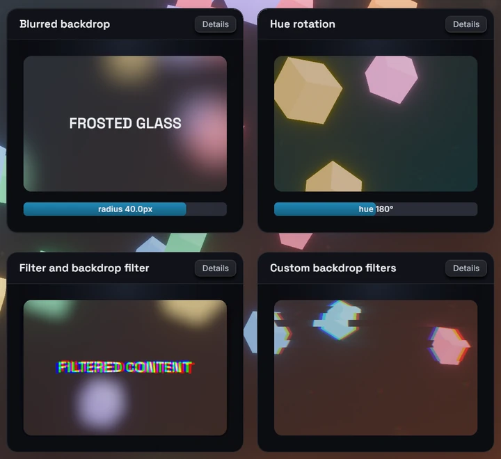

Backdrop filters
The backdropFilter style runs a filter chain over what is rendered behind a
node (the camera's 3D frame) and draws the result under the node's own
background and children. It takes the same chains as the filter style,
which filters the node's own subtree instead. A blur under a translucent
background is the classic frosted-glass panel.
Usage
<node
style={{
padding: 24,
borderRadius: 12,
backgroundColor: "rgba(26, 27, 38, 0.35)",
backdropFilter: { name: "blur", params: { radius: 8 } },
}}
>
<text>frosted glass</text>
</node>Chains
The value is one { name, params } entry or an ordered array of entries, run
in array order:
const glass: BevyStyle = {
backgroundColor: "rgba(26, 27, 38, 0.35)",
backdropFilter: [
{ name: "blur", params: { radius: 12 } },
{ name: "saturate", params: { amount: 1.6 } },
],
};paramsand every param in it are optional. An omitted param takes the filter's default, which for built-ins is a visible effect: a bare{ name: "blur" }is a 20px blur, a bare{ name: "grayscale" }is full grayscale.- Names and params are typed from your generated
bevy.ts, built-ins and your own#[react_filter]filters alike. Without generated bindings the field accepts no value. - An entry with an unknown name or invalid params is skipped with a
backdropFilterUnknownorbackdropFilterParamsdevtools warning; the rest of the chain still runs. Morph filters (crossfade,linearWipe,pixelize) belong tomorphFilterand are rejected the same way. backdropFilterandfilterare independent: one node can carry both, and each one resolves, transitions and animates on its own.- An empty array is the same as no backdrop filter.
What the backdrop is
- The source is the camera's rendered 3D frame, after tonemapping and post-processing, under the node's box. UI is not part of it. With no 3D scene behind the UI, the backdrop is the camera's clear color.
- The filtered result is opaque and is drawn directly under the node's
content. A translucent
backgroundColortints the glass, an opaque one hides it, and UI painted beneath the node inside its box is covered by the filtered scene, not blurred. - The glass fills the node's border box and follows its
borderRadius, with the same antialiased edge as the background. Ancestoroverflowclipping clips it like the rest of the node. opacityon the node fades the glass together with its content.- Blur-like filters sample the scene a little outside the box (a blur reaches three times its radius), so the edges stay clean. The glass itself never paints outside the box.
- While a filter's shader is still compiling, the node shows the unfiltered scene behind it. It never disappears.
Built-in filters on a backdrop
| Filter | On a backdrop |
|---|---|
blur |
Frosted glass |
brightness, contrast, saturate, grayscale, sepia, invert, hueRotate |
Recolor the scene behind the node |
bloom, chromaticAberration |
Glow and color fringing |
pinch |
Lens-like squeeze or bulge of the scene |
gradientMap |
A gradient wash; keep amount below 1 to see the scene |
outline, shadow |
Nothing visible: they draw around the content's alpha, and the backdrop is opaque |
Custom #[react_filter] filters run on a backdrop unchanged; their shader
receives an opaque source. The filter reference lists every built-in's
params, for example blur.
Transitions
transition: { backdropFilter } eases the chain between style states (the
base style, hoverStyle, pressStyle, focusStyle), independently of
transition: { filter }:
- Same names in the same order: the params interpolate.
- One chain extends the other at the end, built-in filters only: the extra entries fade through their identity values (a blur from radius 0).
- Anything else swaps at the halfway point.
- Easing to no chain at all, by unsetting
backdropFilteror setting[], snaps: the filter disappears at once.
Keep an identity entry in the base style when the filter should fade out as well as in:
<node
style={{
backgroundColor: "rgba(26, 27, 38, 0.35)",
backdropFilter: { name: "blur", params: { radius: 0 } },
transition: { backdropFilter: { duration: 250 } },
}}
hoverStyle={{
backdropFilter: { name: "blur", params: { radius: 12 } },
}}
/>The identity entry is not free: it keeps the backdrop running every frame (see Limits).
Animated params
Any param accepts an inline { animated } binding to a shared value, driven
every frame on the Bevy side without re-rendering React:
import { useSharedValue, withTiming } from "bevy-react";
function Glass() {
const radius = useSharedValue(0);
return (
<node
onPointerEnter={() => {
radius.value = withTiming(16);
}}
onPointerLeave={() => {
radius.value = withTiming(0);
}}
style={{
backgroundColor: "rgba(26, 27, 38, 0.35)",
backdropFilter: {
name: "blur",
params: { radius: { animated: radius, seed: 16 } },
},
}}
/>
);
}- Values are in the param's wire units: pixels for lengths, degrees for angles.
- Bindings work in the base
styleonly. A binding inhoverStyle,pressStyleorfocusStyleis ignored with a warning. - Any binding on a backdrop param parks
transition: { backdropFilter }for that node: the binding wins. Bindings onfilterparams are separate. seedis the static value used in the binding's place for what is computed up front, such as how far outside the box a blur samples. Size it for the largest value the animation reaches. Without a seed the filter's default is used (20px forblur).
Limits
- Only the 3D frame is filtered. UI beneath the node is covered by the glass, not blurred into it.
- The backdrop and every pass of its chain re-run each frame while the node has a chain, whether or not anything moved, identity entries included. The cost grows with the node's area (plus a blur's sampling margin) and the chain length. The node's own content is still cached.
transform3don the same node does not transform the glass: it stays in the node's untransformed, axis-aligned box while the content tilts.- Inside another composited layer (an ancestor with a
filter, atransform3d,opacityon a node with children, orcache), every enclosing layer re-captures each frame, which defeats its caching. - Only the main UI camera is supported. Inside a
<surface>or under a second UI camera, the node renders without its backdrop filter and alayerCamerawarning is reported.

See backdropFilter in the
style reference.